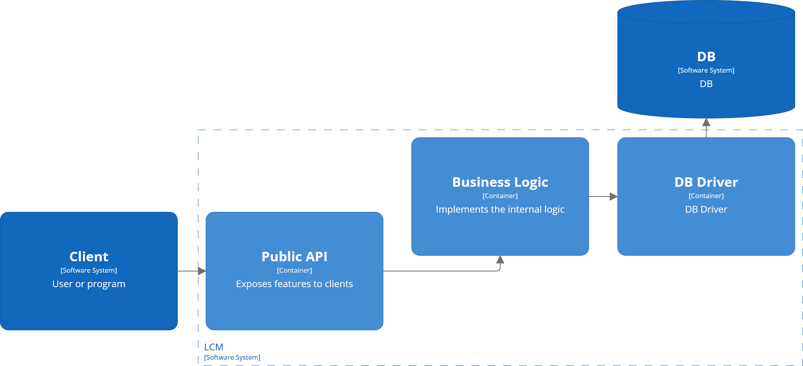
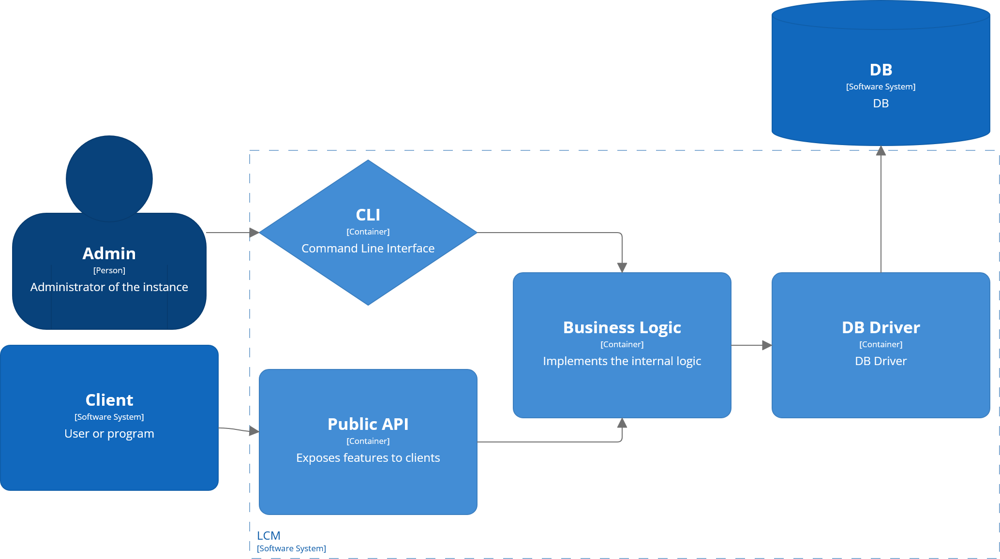

A one-year retrospective
| Language | Pros | Cons |
|---|---|---|
| C++ | Native, works everywhere DPF's native language |
Hard in all aspects |
| Python | Popular Easy at first glance |
Slow |
| Golang | Native Easy |
Interop a bit tedious "Go-what, you say?" |
| ✅️C# | Modern Relatively easy |
May require interop if native dependency is added |
|
 |
Evolution example: add CLI executable invoking the same business logic as the API
Off to a good start:
prod and devprod runs latest releasedev runs tip of main branch
jobs:
build:
name: "Build and push image"
runs-on: [ubuntu-latest]
steps:
- uses: actions/checkout@v4
name: Checkout this repo
jobs:
build:
name: "Build and push image"
runs-on: [self-hosted, ubuntu, load-case-manager]
steps:
- uses: actions/checkout@v4
name: Checkout this repo
jobs:
build:
name: "Build and push image"
runs-on: ansys-internal-arc-dind-runner-scale-set
steps:
- uses: actions/checkout@v4
name: Checkout this repo
| What went well 👍️ | What we'd do differently 😞 |
|---|---|
|
|
|